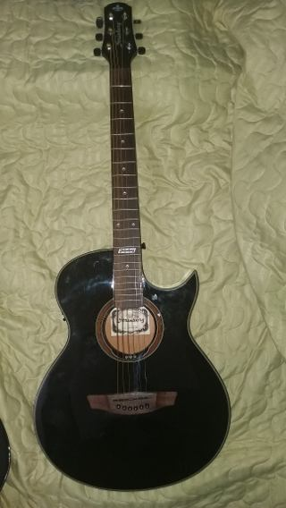
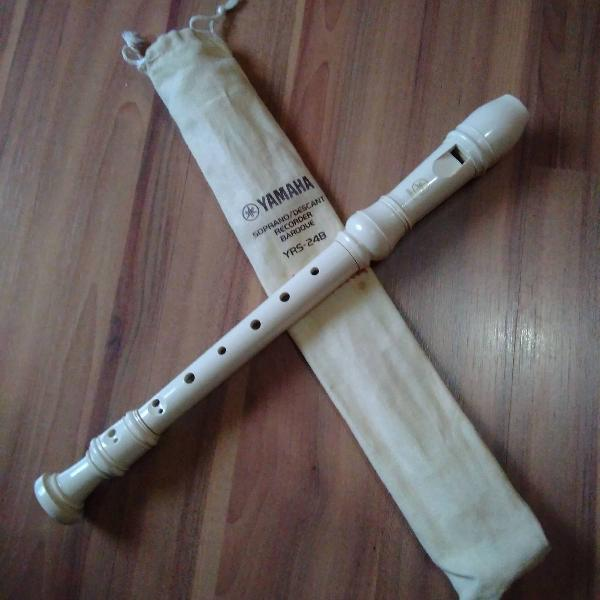
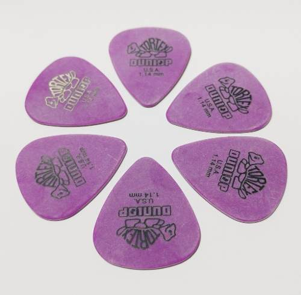
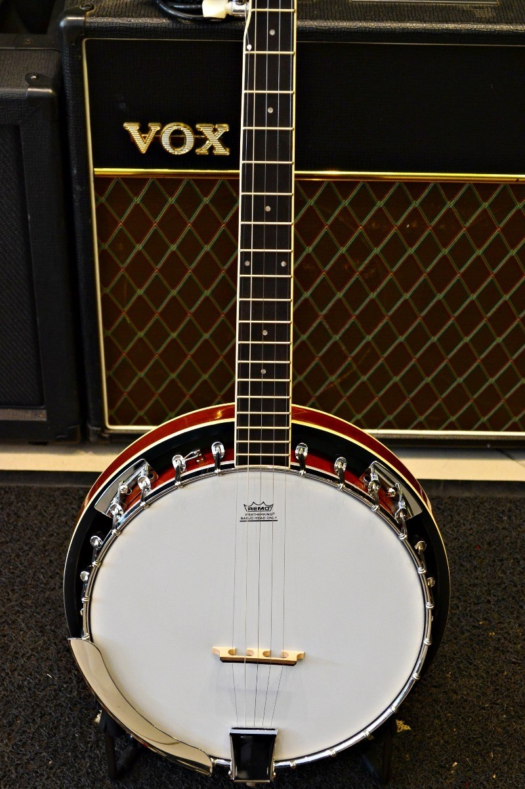

<ion-header>
  <ion-toolbar color="secondary">
      <ion-buttons slot="start">
          <ion-menu-button></ion-menu-button>
        </ion-buttons>

        <ion-row>
          <ion-col class="ion-text-center">
            
          </ion-col>
        </ion-row>
        
  </ion-toolbar>
</ion-header>


<ion-content color="primary">
  <ion-row>
  <ion-col size="8">
  <ion-searchbar animated color="light" placeholder="Pesquisar..."></ion-searchbar>
  </ion-col>
  <ion-col size="4">
    <ion-button class="anunciar" color="secondary" shape="round"><b>ANUNCIAR</b></ion-button>
</ion-col>

<ion-col size="5">                
<h4 class="titulo" color="light"><b>Recomendados</b></h4>
</ion-col>
<ion-col size="7">
  <hr>
</ion-col> 
<ion-col size="6">
  
  <h6><b>Violão String Aw53c Bk Artístico</b></h6>
</ion-col>
<ion-col size="6">
  
  <h6><b>flauta doce yamaha soprano barroca serie 30</b></h6>
</ion-col>
<ion-col size="6">
  
  <h6><b>KIT 6 UNIDADES PALHETAS DUNLOP TORTEX - 1,14MM</b></h6> 
</ion-col>
<ion-col size="6">
  
  <h6><b>banjo strinberg wb50</b></h6>
</ion-col>
<ion-col size="4">                
  <h4 class="titulo" color="light"><b>Recentes</b></h4>
  </ion-col>
  <ion-col size="8">
    <hr>
  </ion-col> 
</ion-row>  
</ion-content>

